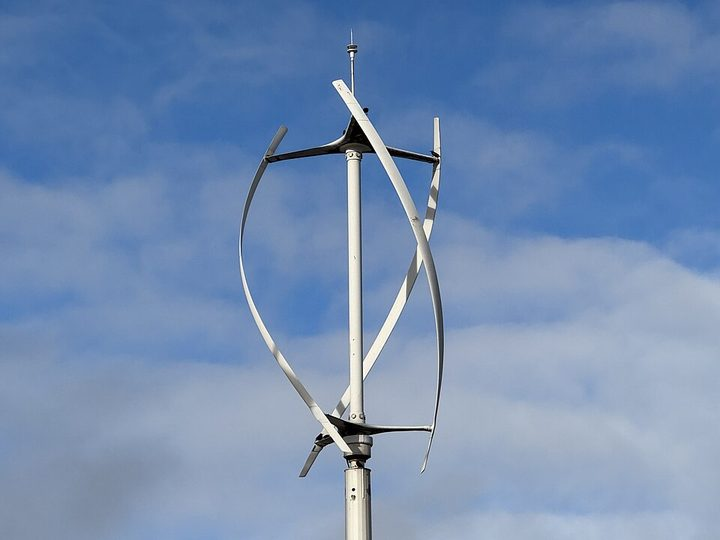

GPU design optimisation of vertical-axis wind turbines
GPU-accelerated simulation and design optimisation of vertical-axis wind turbines to support Gujarat’s renewable-energy transition.
Details
- Full title
- GPU-Accelerated Design Optimization of Vertical Axis Wind Turbines (VAWT) for Gujarat’s Renewable Energy Transition
- Funding
- Climate Change Fund of Gujarat (CCFG), through the Gujarat Energy Development Agency (GEDA)
- Duration
- Three years
- Principal Investigator
- Dr. Anirudh Kulkarni